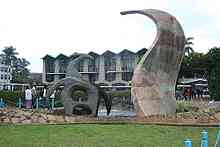

KNIGHTS AND APPLIANCES LTD
|
Motto: In Unity and Work
Type: Public
Established: 1956 Royal Technical College Nairobi
1964 University College Nairobi 1970 University of Nairobi Chancellor:
Dr. Vijoo Rattansi
Vice-Chancellor: Prof. Peter Mulwa Felix Mbithi
Undergraduates: 49,488
Location: Nairobi,
Kenya 1.6'47"S 36.49'00E/1.27972'S 36.81667'E
Campus: Urban
Affiliations: ACU
|
|
The University of Nairobi (UoN) is a collegiate research university based in Nairobi .
It is one of the largest universities in Kenya.
Although its history as an educational
institution dates back to 1956, it did not become an independent university until 1970.
In
this year, the University of East Africa was split into three independent universities:
|
|
 |
During the 2011 academic year, the University had 61,912 students, of whom 49,488 were
undergraduates and 12,424 postgraduates. |
|
The inception of the University of Nairobi dates from 1956, with the
establishment of the Royal Technical College, which admitted its first
group of A-level graduates for technical courses in April the same year. The Royal technical
College was transformed into the second university college in East Africa on 25 June 1961 by
the Scottish mathematician Prof James Morton Hyslop formerly of the University of Witwatersrand
under the name royal college of Nairobi and was admitted into special relation with the University of
London whereupon it began preparing students in the faculties of Arts, Science and Enginnering for award degrees
of the university of London. Meanwhile, students in other faculties such as the faculty of special Professional Studies (later renamed Faculty of Commerce) and Faculty of Architecture continued to offer diplomas for qualifications of professional bodies/insitutions. | On May 1964, the Royal College Nairobi was renamed University College Nairobi as a
consituent college of inter-territorial, Federal University of East Africa, and henceforth the enrolled students were to study for college degrees of the University of East Africa and not London as was the case before. In 1970, it transformed into the first national university of Nairobi. UoN tops in Kenya's University ranking and is ranked
7th in Africa and 1698 in the world according to Webometrics Ranking |
| It is a body corporate established under the Universities Act 2012 of the Laws of Kenya and the Charter Through module II and III programmes, opportunity has been opened to thousands of Kenyans and foreigners, on paying basis, who meet university admission requirements, but who have not been able to access university education due to restricted intake into the regular programmes that is determined by limited resource allocation by Government. | In addition to the regular and evening and weekend programmes, classes are conducted at the University's Extra Mural Centers located at the country's county headquarters. The university is admitting students to undertake courses in the proposed Koitalel Arap Samoei University College for law, business management and education courses that began in January 2015. This is a joint project of the County Government of Nandi and the University of Nairobi |
The university underwent a major restructuring in 1983, resulting in decentralization of the administration,
by creation of six colleges headed by principals.
|
|
|
|
| College | School | Campus |
|---|---|---|
| CBPS |
|
Chiromo Campus Kenyatta Hospital Kenya Science |
| CAE |
|
Main Campus ADD Building |
| CASS |
|
8.4.4 Building Education Building Kisumu Campus Parklands Campus |
For more information about University of Nairobi visit the following link more information
Go to Top of Page